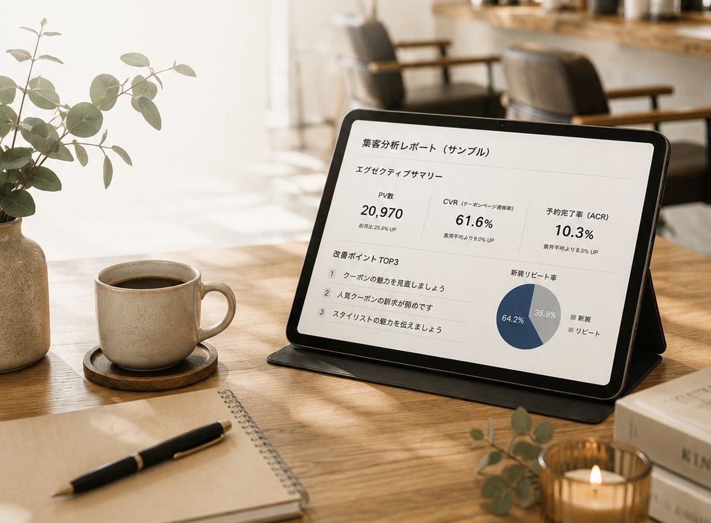
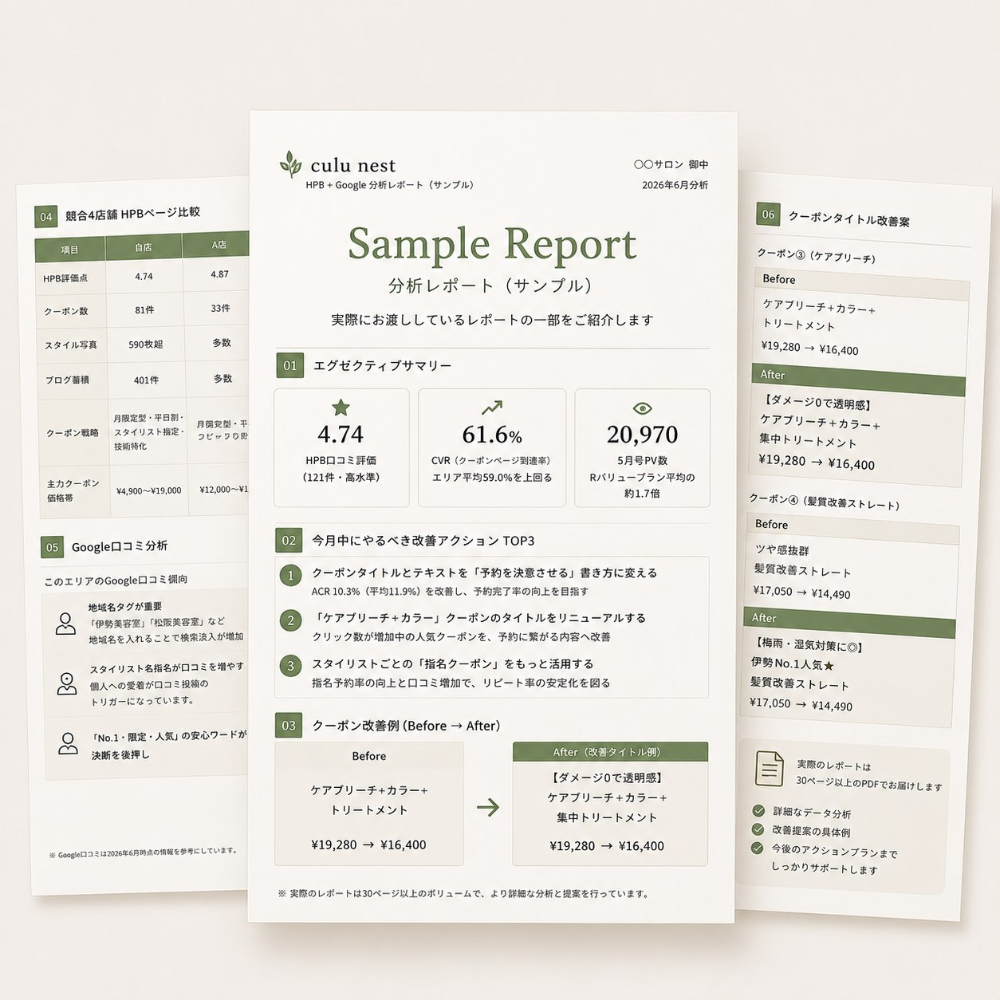

culu nestについて
なぜ、このサービスを
作ったのか
美容業界で長く仕事をするなかで、ほんの少し見直しただけで、大きく変わっていくサロンをたくさん見てきました。
一方で、高額なコンサルを頼むほどではないけれど、「今より、もう少し良くしたい」と感じているオーナーも、同じくらい多くいらっしゃいました。
だからこそ、必要な時にだけ相談でき、分析結果をもとに自分たちの手で改善していける。そんなサービスを作りたいと思いました。
美容室向け ホットペッパービューティー分析｜culu nest
ホットペッパービューティーの掲載データをプロが分析し、あなたのサロンに合った改善のヒントをレポートでお届けします。
LINEでの事前相談は無料です。しつこい営業は行いません。

よくある声
ホットペッパーの数字、正直よく分からない
口コミが、なかなか増えない
新規は来るのに、リピートに繋がらない
他店と何が違うのか、うまく言えない
コンサルは高いし、頼むほどでもない
忙しくて、分析する時間がない
サンプルレポート
culu nestがお渡ししているレポートの一部をご紹介します。数字を並べるだけでなく、「次に何をすればいいか」まで、具体的にお伝えしています。
掲載写真・メニュー・価格帯が、周辺の競合店と比べてどう見えているかを整理します。
反応率の低いクーポンやメニュー名について、具体的な代替案とあわせてご提案します。
効果が出やすいものから順に、着手すべきポイントをリストアップしてお渡しします。

実際にお渡ししているレポートの構成をもとに、サンプル値で再現しています。
分析でわかること
「自分の店なら、何がわかるんだろう」——そう思った方へ。専門用語は使わず、実際に見えてくることをそのままお伝えします。
競合店との違い
クーポンの改善点
伝わっていない自店の強み
Google口コミの傾向
改善すべき優先順位
すぐやることと、じっくりやること
culu nestに相談すると
culu nestは、答えを売るのではなく、変わるきっかけを届けるサービスです。
感覚で判断していた数字を、根拠を持って語れるようになります。
分析結果をもとに、スタッフ同士で次の一手を考えられるようになります。
過剰な施策や高額なオプションをおすすめすることはありません。
迷ったときに相談できる相手が、いつでもそばにいる安心感があります。
こんな方におすすめです
サービス
現在は、ホットペッパービューティー分析を提供しています。
掲載データをもとに、現状の見え方・改善ポイント・優先順位をレポートにまとめてお届けします。次に何をすべきかまで、具体的にわかります。
LINEでの事前相談は無料です
※Instagram分析・Googleビジネスプロフィール分析（MEO）など、今後のサービスもこちらに追加していきます
改善事例
分析のあと、実際にどんな変化があったのか。1件ずつ、丁寧にご紹介していきます。
【人気No.1！】カット＋韓国風カラー＋トリートメント
【駅チカ・SNSで人気】韓国風カラー×潤艶トリートメント
価格は変更なし（15,510円 → 12,100円）
最寄り駅からの近さと「SNSで人気」という安心ワードを追加。反応率の高いクーポンを、より見つけやすい形に強化しました。
※実際の改善例をもとに、店舗名・地域名は伏せて再構成しています
反応が伸び悩んでいる、あるクーポンがありました。「人気」を示すだけの、やや抽象的なタイトルでした。
最寄り駅からの近さと、お客様が安心して選べる言葉を加えることをご提案しました。
ご提案をもとに、クーポンのタイトルを変更されました。
スタッフの皆さんにも納得いただきながら進められ、「とても良い」と前向きなお言葉をいただきました。
お客様の声
スタッフも納得しながらページ作りができているので、とても良いです。今後も是非お願いします。
※実際にいただいたLINEメッセージをもとに、匿名加工のうえ掲載しています
客観データ
2026年7月時点・5店舗の分析後アンケートより（匿名集計）
「実践したい」と回答
すぐ実践したい60%／一部実践したい40%
「利用したい」と回答
ぜひ利用したい60%／必要になれば利用したい20%
20%の方は「知り合いにも紹介したい」と回答
culu nestについて
美容業界で長く仕事をするなかで、ほんの少し見直しただけで、大きく変わっていくサロンをたくさん見てきました。
一方で、高額なコンサルを頼むほどではないけれど、「今より、もう少し良くしたい」と感じているオーナーも、同じくらい多くいらっしゃいました。
だからこそ、必要な時にだけ相談でき、分析結果をもとに自分たちの手で改善していける。そんなサービスを作りたいと思いました。
今後の展開
ホットペッパーの「中」の改善だけでなく、これからは集客の入口そのものを広げていきます。少しずつですが、着実に増やしていく予定です。
投稿とフォロワーの動きを可視化し、集客への活かし方をご提案します。
地図検索やGoogle検索での見え方を分析し、口コミも含めたMEO対策のヒントをお届けします。
サロン全体の数字を、シンプルに把握できる仕組みをご用意します。
スタッフの成長を、数字と対話の両方から後押しします。
日々の経営判断を、AIがそっとサポートする仕組みを構想中です。
サロンの状態が、ひと目で分かるダッシュボードを準備しています。
ご利用の流れ
まずは気軽に、LINEで友だち追加をお願いします。
お店の状況について、簡単にお伺いします。
ホットペッパーの掲載データをもとに分析し、レポートにまとめます。
レポートの内容を一緒に確認しながら、次の一歩をサポートします。
ご相談前に
はい、大丈夫です。LINEでの事前相談は無料ですので、まずはお気軽にご相談ください。
ホットペッパービューティー分析は、税込10,000円でご案内しています。
単発でのご依頼が可能です。継続利用の縛りは設けていません。
美容室・理容室であれば、規模を問わずご相談いただけます。まずはお気軽にお問い合わせください。
ヒアリング後、目安として1〜2週間程度でお届けしています。混雑状況により前後する場合がございます。
はい、対応可能です。ご相談から分析・レポートのお届けまで、オンラインで完結します。
特別な準備は必要ありません。現在掲載中のホットペッパーのページを拝見しながら進めますので、まずはお気軽にご相談ください。
お問い合わせ
LINEで友だち追加のうえ、お気軽にご相談ください。
LINEで相談するLINEでの事前相談は無料です。分析サービスは税込10,000円です。
しつこい営業は行いませんので、ご安心ください。